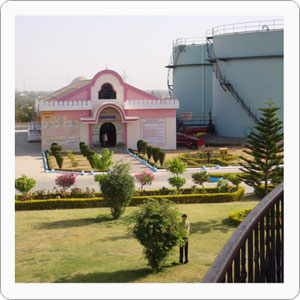
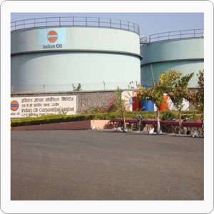

Our Achivements
- IndianOil was the first company to introduce the concept of
LPG rural marketing. This concept was mooted largely to counter the
extensive deforestation that takes place in rural areas. It has
since contributed immensely to the preservation of the environment
and helped limit the use of conventional fuels like firewood.
- Company doubled its bottling capacity from 1.45 million
tonnes per annum to over 3 million tonnes per annum
- Conscious of its environment, IndianOil has also tied up
with leading manufacturers of 'Green Label' branded LPG stoves by
Bureau of Indian Standards (BIS), giving thermal efficiency of 68%
and fuel savings of 15%.
 